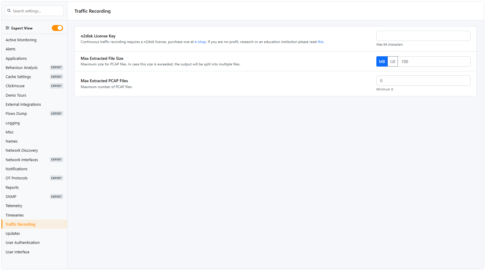
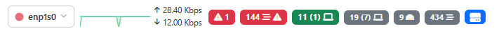
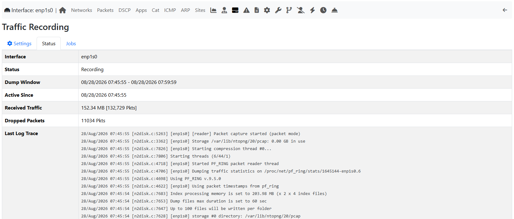
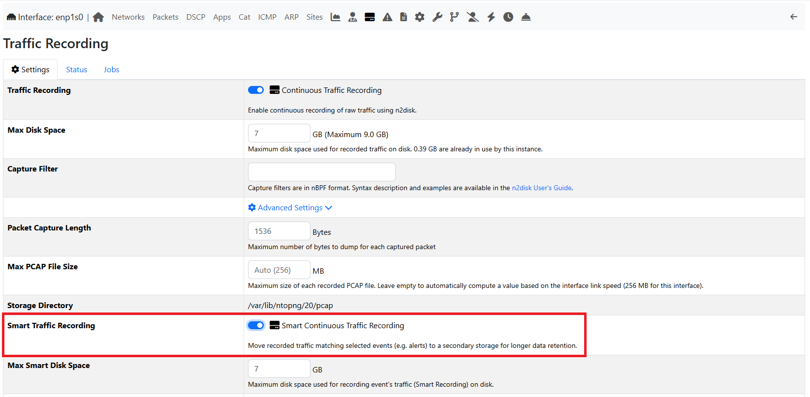
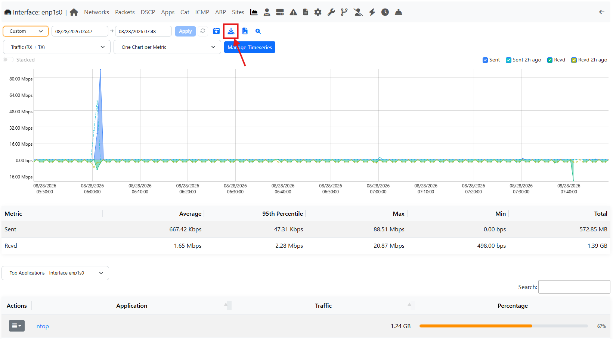
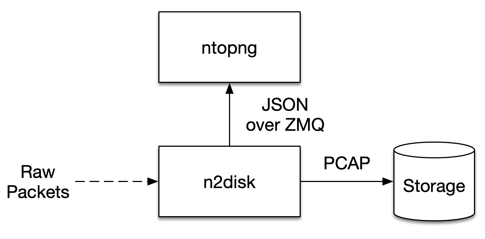

Использование ntopng с n2disk
Когда дело доходит до устранения неполадок в сети или анализа событий безопасности, возвращение в прошлое и детализация до уровня пакетов может иметь решающее значение чтобы найти точную сетевую активность, вызвавшую проблему. Непрерывная запись трафика обеспечивает окно в историю сети, позволяет вам получить и проанализировать весь необработанный трафик за этот период времени.
Включение записи трафика
ntopng, начиная с версии 3.7, включает поддержку непрерывной записи трафика. используя n2disk, оптимизированное приложение для записи трафика, входящее в состав ntop пакет доступен в системах Linux.
Чтобы иметь возможность включить эту функцию:
оба ntopng и n2disk необходимо устанавливать из пакетов на том же хосте. Это поддерживается на физических хостах или виртуальных машинах. Контейнеры пока не поддерживаются.
n2disk должны быть лицензированы в соответствии с требуемой скоростью дампа. Существует пакетная лицензия ntopng, которая позволяет лицензировать обе программы с помощью одной удобной лицензии.
ntopng и n2disk должен быть установлен и запущен на одном хосте, чтобы получить копию того же трафика и иметь возможность взаимодействовать (обращаться к одной и той же файловой системе).
Для установки n2disk (мы предполагаем, что вы уже настроили ntop репозиторий и иметь ntopng установлен) выполните следующие команды в соответствии с вашим дистрибутивом Linux:
подходящий
apt-get install n2disk
ням
yum install n2disk
Пожалуйста, убедитесь, что ntopng работает с использованием ntopng пользователь, который является значением по умолчанию, начиная с версии 3.7, как сообщается в это уведомление.
Чтобы использовать n2disk также необходима лицензия, вы можете получить ее на интернет-магазин или, если вы некоммерческая организация, проводите исследования или образовательное учреждение, пожалуйста, прочтите этот. n2disk лицензию можно установить прямо из ntopng через Предпочтения, Запись трафика меню. На этой же странице также представлены установленный n2disk версия и SystemID, оба необходимы для создания лицензия.
Примечание
ntopng Enterprise L уже включает лицензию n2disk 1 Gbit, в этом нет необходимости купить лицензию n2disk, если установлена лицензия ntopng Enterprise L.

Страница настроек записи трафика
На этом этапе вы готовы начать запись трафика. Пакеты сбрасываются на диск с использованием стандартного формата файла Pcap. По умолчанию папка для файлов pcap — это каталог данных ntopng в папке «pcap» конкретный идентификатор сетевого интерфейса (например. /var/lib/ntopng/0/pcap), однако можно заменить /var/lib/ntopng корневая папка с добавлением другой –pcap-реж <путь> к ntopng файл конфигурации.
Примечание
Для непрерывной записи дорожного движения с помощью адаптеров ZC или FPGA прочтите ZC/FPGA Поддержка раздел.
Для того, чтобы реально начать запись трафика, вам необходимо выбрать интерфейс из тот Интерфейсы меню, откройте его Запись вкладка, выбрать Настройки и настройте экземпляр записи:
Переключить «Непрерывная запись трафика»
Настройте желаемое значение «Максимальное дисковое пространство» (GB, предлагаемый максимум указан в разделе поле). Это позволяет вам контролировать максимум дисковое пространство будет использоваться для файлов pcap, что также влияет на время хранения данных (при превышении максимального дискового пространства самый старый файл pcap перезаписывается). Обратите внимание, что время хранения данных также зависит от пропускной способности трафика. контролируемых сетей. При желании установите «Фильтр захвата» (nBPF) и в разделе Расширенные настройки, «Длина захвата пакета» и «Макс. размер файла PCAP» (пустые: вычисляются на основе скорость соединения интерфейса).
Нажмите «Сохранить изменения» на панели, которая появляется после изменения, чтобы начать. запись (или остановить ее, когда запись выключена).
Использование хранилища Панель показывает, как используется том каталога pcap: система, по дампам пакетов интерфейса, по извлеченным пакетам и бесплатно. В интерфейсе коллектора ZMQ на той же странице также можно выбрать Внешний интерфейс записано n2disk и включите Экспорт потока своего трафика на ntopng.
Запись Вкладка имеет три вида: Статус, Настройки и Вакансии (извлечение рабочие места, Предприятие М). Статус и Вакансии доступны после включения записи, и Статус тогда открывается по умолчанию. Когда n2disk управляется внешним поставщиком (см. ниже) никаких настроек нет: только статус и задания.

Страница записи трафика
На этом этапе в верхней строке состояния должен появиться новый значок. Когда значок синего цвета, это означает, что идет запись трафика. Вместо этого, когда значок красный, значит, произошел сбой.

Значок записи трафика в нижнем колонтитуле
Есть возможность получить дополнительную информацию о n2disk статус услуги по нажав на значок, который открывает Статус вид на Запись вкладка. Это показывает записывается ли n2disk (или произошел сбой: a Перезапустите службу кнопка перезапускает его), окно дампа (диапазон времени, доступный на диске), поскольку, когда оно активно, записанный трафик, отброшенные пакеты, окно смарт-записи и последние строки журнала n2disk (последние сначала). Кнопка обновления в заголовке считывает их снова.

Страница состояния записи трафика
Умная запись
Примечание
Интеллектуальная запись доступна только в ntopng Enterprise XL.
ntopng, начиная с версии 5.7, включает поддержку интеллектуальной записи.
Как описано в предыдущем разделе, непрерывная запись трафика обеспечивает окно в историю сети, позволяющее извлекать и анализировать все тот сырой трафик за этот период времени. Сохранение данных (размер окна) зависит от размера хранилища (настроенного «Макс. дискового пространства»). Однако при высокой скорости трафика доступное дисковое пространство может не удовлетворять желаемому уровню. сохранение данных, слишком ранняя перезапись данных, чтобы освободить место для новых данных. В тех случаях полезно расставить приоритеты для выбранного трафика, который соответствует сетевым событиям (например, предупреждения системы безопасности), что более важно, чем rest трафика.
Поддержка Smart Recording создает хранилище второго уровня, реализующее Smart Recording. Сохранение данных, что означает архивирование трафика, соответствующего сетевым событиям, для более длительное хранение данных для этих данных (которые обычно представляют собой небольшую часть полной необработанные данные).

Интеллектуальная архитектура записи
Для получения дополнительной информации, пожалуйста, также прочитайте Сообщение в блоге «Умная запись» и смотреть Видеоурок по умной записи.
Чтобы включить интеллектуальную запись, необходимо включить непрерывную запись трафика. включено, как описано на предыдущей странице, и на той же странице необходимо:
Переключить «Умную запись трафика»
Настройте желаемое «Максимальное пространство Smart Disk Space», чтобы контролировать максимальное дисковое пространство. будет использоваться для файлов pcap в хранилище второго уровня (только трафик событий).
Нажмите «Сохранить изменения», чтобы включить его.

Настройки умной записи
После включения интеллектуальной записи при запросе извлечения трафика (из один из графиков, выбрав временной интервал, или при загрузке трафика pcap для алерта или для потока) трафик извлекается из хранилища первого уровня, если он попадает в окно хранилища первого уровня или из хранилища второго уровня в противном случае (в последнем случае будут доступны только сетевые события, соответствующие трафику).
Внешние поставщики записи трафика
Запись трафика на высоких скоростях (10/40/100 Gbit и выше) обычно требует специального/ручного управления. конфигурации, как в этом случае технологии ускоренного захвата, такие как PF_RING ZC с Требуются адаптеры Intel, Mellanox или FPGA, а n2disk необходимо правильно настроить. и настроен для полного использования преимуществ аппаратной архитектуры (привязка CPU, хранилище и т. д.).
Для поддержки пользовательских конфигураций n2disk, ntopng также можно подключить к внешнему n2disk экземпляры/сервисы, настроенные вручную с помощью systemd, и наоборот. к использованию ntopng для автоматической настройки и запуска записи с помощью GUI. Фактически, ntopng можно привязать к внешнему провайдеру записи трафика, выбрав его из страница настроек интерфейса. Выпадающее меню со списком доступных провайдеров записи. там показано.

Выбор внешних поставщиков записи трафика
Примечание
В случае n2disk процессы управляются вручную с помощью конфигурации. файлы, ntopng не будет отображать вкладку настроек и не позволит изменение конфигурации. Однако извлечение все равно возможно. как описано в следующем разделе.
Также обратите внимание, что адаптеры ZC и FPGA основаны на технологиях обхода ядра, который обеспечивает лучшее ускорение захвата, с тем недостатком, что этого не происходит (обычно) разрешить нескольким приложениям захватывать один и тот же поток данных одновременно (с некоторыми исключения, такие как адаптеры Silicom/Fiberblaze и Mellanox, в зависимости от конфигурации). Это означает, что ntopng и n2disk не могут захватывать и обрабатывать один и тот же трафик одновременно. время. По этой причине, чтобы преодолеть это ограничение, n2disk может экспортировать передавать метаданные на ntopng через ZMQ, аналогично тому, что делает nProbe (как описано в Использование ntopng с разделом nProbe). В этой конфигурации n2disk можно настроить на захватывать необработанные пакеты, выгружать данные PCAP на диск и экспортировать метаданные потока в JSON или TLV формат от ZMQ до ntopng для наглядности.
Для обработки метаданных потока через ZMQ в ntopng интерфейсу сборщика необходим необходимо добавить в файл конфигурации ntopng (/etc/ntopng/ntopng.conf):
-i=tcp://*:5556c
Ту же конечную точку необходимо добавить в файл конфигурации n2disk (например, /etc/n2disk/n2disk-eth0.conf):
[...]
--zmq=tcp://127.0.0.1:5556
--zmq-probe-mode
--zmq-export-flows
-u=ntopng
Обратите внимание, что рекомендуется запускать n2disk от имени пользователя ntopng (см. -u). чтобы убедиться, что ntopng имеет доступ к данным PCAP, записанным n2disk и запускайте извлечение трафика.
Полный пример конфигурации n2disk можно найти в n2disk Руководстве пользователя. дополнительную информацию о других вариантах.
Извлечение трафика
Все файлы pcap, сохраненные на диске, индексируются на лету n2disk для улучшения трафика скорость извлечения, когда необходимо извлечь записанные данные. Можно извлечь трафик из нескольких мест в ntopng, включая интерфейс и хозяин Историческая статистика трафика страницы.
После включения непрерывной записи трафика на интерфейсе появилась новая кнопка для извлечения пробки отображаются в правом верхнем углу Историческая статистика трафика страница.

Кнопка «Извлечь Pcap» на странице «Историческая статистика трафика» интерфейса.
Нажав на кнопку, откроется диалоговое окно, позволяющее запустить извлечение для извлечения трафик, соответствующий временному интервалу, выбранному на графике. Есть возможность скачать добытый трафик напрямую (это следует использовать, когда ожидаемый объем добытого трафика трафик низкий) или поставьте задание извлечения в очередь для обработки трафика в фоновом режиме (это должно использоваться для слишком долгого извлечения или для архивирования извлеченных данных на работающей машине ntopng).

Диалоговое окно «Извлечение Pcap»
Помимо ограничения по времени, можно настроить фильтр типа BPF, чтобы еще больше уменьшить извлекаемый объем данных, нажмите на значок Передовой. кнопка Формат фильтра описан на странице Фильтрация пакетов.

Фильтр диалога «Извлечение Pcap»
Если задание извлечения запланировано для фоновой обработки, выберите Очередь как задание вариант, ntopng извлекает трафик и создает новый pcap файлы с трафиком. Обычно для этого требуется несколько секунд, в зависимости от нескольких факторов, в том числе: интервала времени, объема записанных данных, экстракционный фильтр.
Ссылка на задание по извлечению (ссылка на файл Вакансии вид на интерфейс Запись вкладка с список запланированных извлечений и извлечение ИДЕНТИФИКАТОР) предоставляется после начала извлечения, чтобы контролировать статус и загрузить файл(ы) pcap сразу после завершения извлечения. В списке сначала самые новые и обновляются каждые 10 секунд (переключатель автоматического обновления). Для каждого задания отображается его Идентификатор, время создания, статус (в неудачных заданиях также указывается причина), извлеченный диапазон времени, фильтр и извлеченные пакеты и байты. Кнопка действия в каждой строке загружает файл pcap (задание, разделенное на несколько файлов открывает диалог с одной ссылкой на каждый); его меню открывает диаграмму, в которой было запланировано задание from, останавливает выполняемое задание (в случае, если извлечение занимает слишком много времени) или удаляет его (это также удаляет соответствующие файлы pcap). Недоступные действия остаются в меню и отключены по причине. Удалить все задания, под списком, удаляет все задания интерфейса (работающие останавливаются). В интерфейсе просмотра Запись на вкладке показаны только задания, извлеченные из просматриваемых интерфейсов. которые записывают трафик.

Страница «Задания по извлечению трафика»
Есть возможность получить доступ к Задания по извлечению трафика страницу, также нажав на значок, который появляется в верхней строке состояния, если запланировано хотя бы одно задание по извлечению.
Значок заданий по извлечению трафика в верхней строке состояния
REST API
Файл pcap также можно загрузить напрямую через http, запустив живое извлечение.
Можно использовать инструмент командной строки, такой как wget или завиток для этого.
Прямой URL-адрес для загрузки pcap:
http://<ntopng IP>:3000/lua/rest/get/pcap/live_extraction.lua?ifid=<id>&epoch_begin=<epoch>&epoch_end=<epoch>[&bpf_filter=<filter>]
Где:
еслиид это идентификатор интерфейса, как сообщает ntopng на странице интерфейса
эпоха_begin — начало временного интервала, который необходимо извлечь (эпоха)>
конец_эпохи — конец извлекаемого интервала времени (эпоха)>
bpf_фильтр это фильтр в nBPF формат
Обратите внимание, что для аутентификации вам следует использовать файлы cookie, как описано в документации.
Например с завиток вы можете указать имя пользователя и пароль с помощью --cookie "user=<user>; password=<password>"
Инструменты командной строки полезны, например, для обработки потока pcap и передачи его в инструмент анализа, такой как tcpdump или Тшарк/wireshark. Например, для обработки извлеченного трафика напрямую с помощью wireshark, можно использовать завиток как в примере ниже:
curl -s --cookie "user=admin; password=admin" "http://192.168.1.1:3000/lua/rest/get/pcap/live_extraction.lua?ifid=1&epoch_begin=1542183525&epoch_end=1542184200" | wireshark -k -i -
ZC/FPGA Поддержка
Если вам необходимо обрабатывать трафик на высокой скорости 10/40 Гбит и выше, вы, вероятно, ищете захватывать такие технологии, как PF_RING ЗЦ для Intel или FPGA адаптеры.
Поскольку оба адаптера PF_RING ZC и FPGA основаны на обходе ядра, их недостатком является то, что они не позволяют захватывать один и тот же поток из нескольких приложений одновременно. Это означает, что вы не можете одновременно запустить ntopng для анализа трафика и n2disk для записи необработанного трафика на том же интерфейсе.
Чтобы преодолеть эту проблему, n2disk может экспортировать метаданные потока в ntopng вместо ZMQ, аналогично что делает nProbe, как описано в Использование ntopng с nProbe раздел. Как показано ниже, в этой конфигурации n2disk можно настроить для захвата необработанных пакетов, дампа PCAP данные на диск и одновременно экспортировать метаданные потока в формате от JSON до ZMQ–ntopng.

Поддержка экспорта n2disk ZMQ
Ниже приведен пример конфигурации n2disk и ntopng для достижения того, что было изображено выше. В этом примере предполагается, что оба n2disk и ntopng работают на одном хосте.
ntopng Файл конфигурации
Чтобы обрабатывать метаданные потока через ZMQ в ntopng, вам необходимо добавить интерфейс сборщика в файл конфигурации (/etc/ntopng/ntopng.conf):
-i=tcp://*:5556c
n2disk Файл конфигурации
Конечную точку ntopng следует добавить в файл конфигурации n2disk (например, /etc/n2disk/n2disk-nt01.conf)
используя --zmq вариант.
--zmq-probe-mode опция (если ntopng работает как сборщик, как в этом примере: обратите внимание
маленький c в конечной точке ntopng) и --zmq-export-flows опция (для экспорта потока
метаданные в дополнение к статистике трафика) также необходимы.
Хорошей практикой является запуск n2disk с помощью ntopng пользователь (см. -u), чтобы убедиться, что
ntopng может получить доступ к данным PCAP, записанным n2disk, и выполнить извлечение трафика.
Пожалуйста, ознакомьтесь с n2disk Руководство пользователя для получения дополнительной информации о других вариантах. Обратите внимание, что в примере ниже n2disk — это агрегирование трафика на аппаратном уровне. от 2 портов адаптера Napatech, см. Napatech конфигурация для настройки адаптера.
--interface=nt:0,1
--dump-directory=/storage/n2disk/pcap
--timeline-dir=/storage/n2disk/timeline
--disk-limit=80%
--max-file-len=1000
--buffer-len=4000
--max-file-duration=60
--index
--snaplen=1536
--writer-cpu-affinity=0
--reader-cpu-affinity=1
--compressor-cpu-affinity=2,3
--index-on-compressor-threads
-u=ntopng
--zmq=tcp://127.0.0.1:5556
--zmq-probe-mode
--zmq-export-flows
На этом этапе вам следует запустить службу ntopng (например. systemctl начало ntopng) и n2disk услуга (напр. systemctl старт n2disk@nt01) и настройте экземпляр n2disk как внешний источник PCAP. для интерфейса коллектора, как описано в Внешние поставщики записи трафика раздел по порядку чтобы иметь возможность проверять статус службы n2disk и выполнять извлечение трафика.